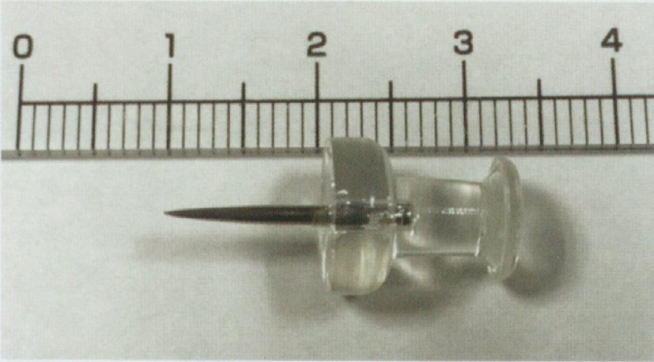
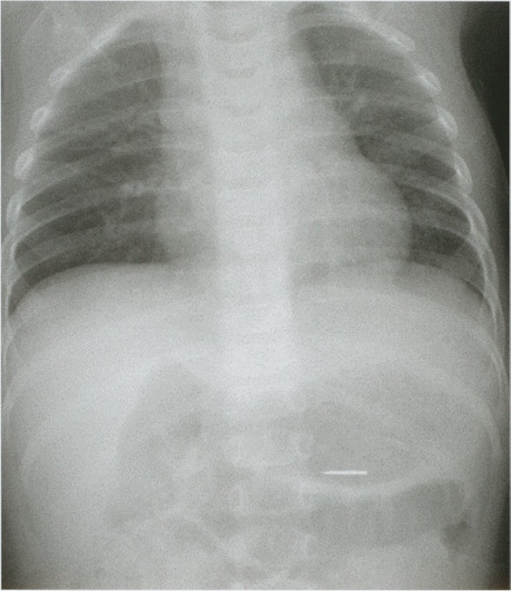
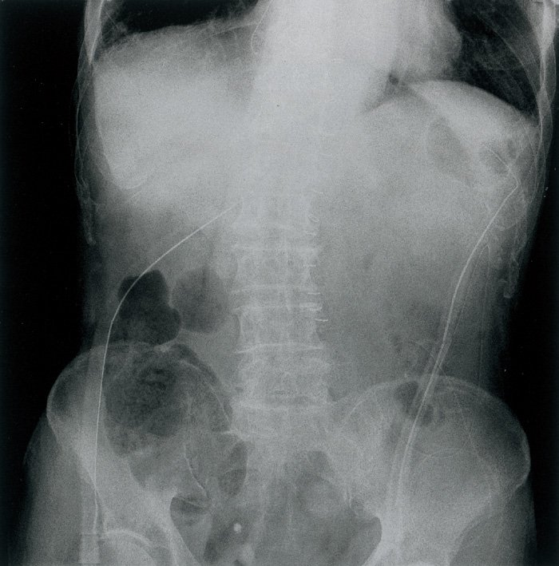
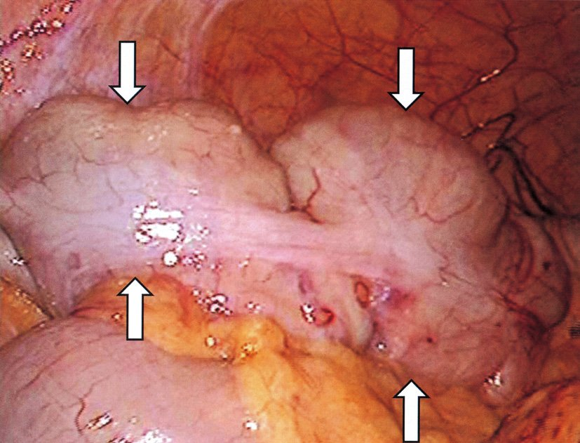
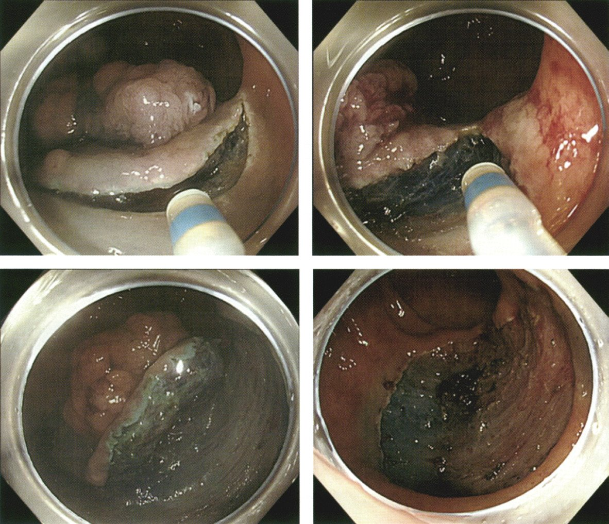
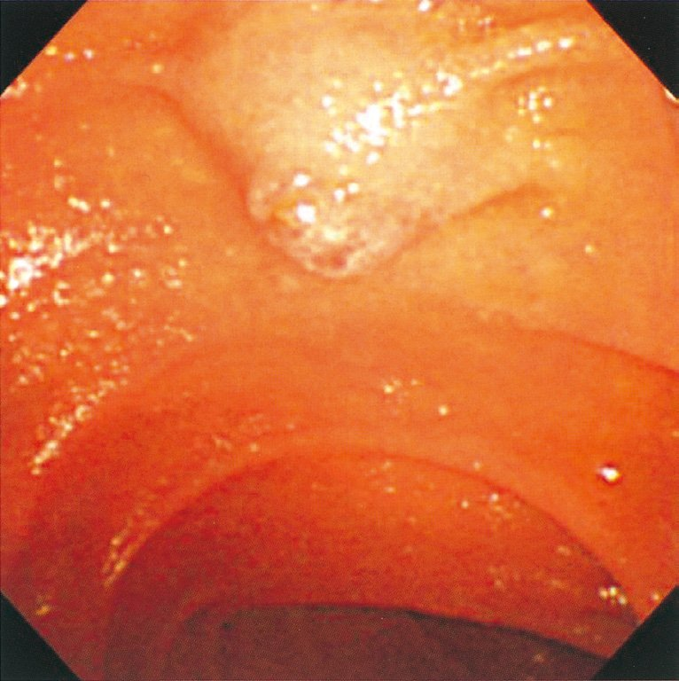

| 異物 | 対応 |
|---|---|
| 種別 | 対応 |
| 硬貨・平坦なもの | 自然排出を待つ（定期X線） |
| 電池（ボタン電池） | 緊急内視鏡摘出（腐食性） |
| 尖った異物（針・画鋲） | 内視鏡的摘出（穿孔予防） |
| 長い異物（>5cm） | 内視鏡的摘出（通過困難） |
| 検査 | 体位 | 理由 |
|---|---|---|
| 検査 | 体位 | 理由 |
| 上部消化管内視鏡 | 左側臥位 | 胃底部の貯留液が右側→食道～胃を観察しやすい |
| 下部消化管内視鏡 | 左側臥位（開始時） | S状結腸・下行結腸の解剖に沿う |
| 直腸肛門指診 | シムス位（左側臥位＋膝屈曲） | 括約筋弛緩 |
| 物質 | 吸収部位 | 備考 |
|---|---|---|
| 物質 | 吸収部位 | 備考 |
| エタノール | 胃・小腸 | 脂溶性→細胞膜を直接透過 |
| アスピリン（弱酸） | 胃 | 酸性環境で非イオン型→吸収 |
| 鉄（Fe²⁺） | 十二指腸・上部空腸 | ビタミンCで吸収促進 |
| 葉酸 | 空腸 | 活性型（THF）に変換 |
| 脂肪酸（長鎖） | 小腸（空腸） | ミセル→リンパ管 |
| グルコース | 空腸 | SGLT1（Na共輸送） |
| ビタミンB12 | 回腸末端 | 内因子と結合して吸収 |
| 選択肢 | 分類 |
|---|---|
| 選択肢 | 分類 |
| ａ 食道（胸部） | 後縦隔（腹腔外） |
| ｂ 胃 | 腹腔内（腸間膜あり） |
| ｃ 十二指腸 | 後腹膜臓器（正答） |
| ｄ 空腸 | 腹腔内（腸間膜あり） |
| ｅ 横行結腸 | 腹腔内（腸間膜あり） |
| 浸潤深度 | 内視鏡的切除の可否 |
|---|---|
| 浸潤深度 | 内視鏡的切除の可否 |
| 粘膜内（M） | 内視鏡切除（EMR/ESD）可能 |
| 粘膜下層浅部（SM1） | 条件により内視鏡切除 |
| 粘膜下層深部（SM2）以深 | 原則手術 |

| 手術 | 主なドレーン留置部位 |
|---|---|
| 手術 | 主なドレーン留置部位 |
| 胃全摘（食道空腸吻合） | 左横隔膜下＋Winslow孔 |
| 幽門側胃切除（胃空腸吻合） | 吻合部近傍・Winslow孔 |
| 膵頭十二指腸切除 | 膵空腸吻合部付近・Winslow孔 |
| 直腸切除 | Douglas窩・直腸膀胱窩 |
| S状結腸切除 | 左傍結腸溝・Douglas窩 |

| 臓器 | 特徴 |
|---|---|
| 臓器 | 腹腔鏡的特徴 |
| 結腸 | taenia coli（結腸ひも）、haustra（ハウストラ）、appendices epiploicae（腸脂垂） |
| 小腸（空腸・回腸） | 腸間膜あり、ひだ（輪状ひだ）、脂垂なし |
| 胃 | 大弯・小弯、胃壁が厚い、前庭部形状 |
| 直腸 | peritoneal reflection（腹膜翻転）より肛門側、taeniaが消失し全周性筋 |
| 選択肢 | 正誤 | 解説 |
|---|---|---|
| 選択肢 | 正誤 | 解説 |
| ａ 左反回神経は鎖骨下動脈を反回する | ✗ | 左反回神経は大動脈弓を反回（右は鎖骨下動脈） |
| ｂ 食道裂孔部は上門歯から約40cm | ✓ | 正答 |
| ｃ McBurney点は虫垂先端の位置 | ✗ | McBurney点は虫垂根部（回盲部）の位置 |
| ｄ 直腸は下腸間膜動脈と内腸骨動脈 | ✓ | 正答（二重血流） |
| ｅ 内肛門括約筋は随意筋 | ✗ | 不随意筋（平滑筋）。外肛門括約筋が随意筋（横紋筋） |
| 筋肉 | 種類 | 排便時の動き |
|---|---|---|
| 筋肉 | 種類 | 排便時の動き |
| 内肛門括約筋 | 平滑筋（不随意） | 弛緩（自律神経） |
| 外肛門括約筋 | 横紋筋（随意） | 弛緩（意識的） |
| 恥骨直腸筋 | 横紋筋 | 弛緩→直腸肛門角開大（直線化） |
| 大腸 | 平滑筋 | 蠕動↑（大腸反射） |
| 切除長 | 主な影響 |
|---|---|
| 切除長 | 主な影響 |
| <100cm | 胆汁酸性下痢（代償機能あるが不十分） |
| >100cm | 胆汁酸性下痢＋脂肪吸収不良・脂肪性下痢（胆汁酸枯渇） |
| B12 | 回腸末端切除でビタミンB12吸収↓（内因子複合体の吸収部位） |
| 栄養素 | 消化酵素 | 吸収部位 |
|---|---|---|
| 栄養素 | 消化酵素 | 吸収部位 |
| 糖質 | 唾液・膵アミラーゼ→刷子縁酵素 | 上部小腸（十二指腸・空腸） |
| 脂質（TG） | 膵リパーゼ | 空腸（ミセル経由）→リンパ管 |
| 蛋白質 | ペプシン（胃）・膵プロテアーゼ | 小腸（アミノ酸・ジ/トリペプチド） |
| 鉄 | なし（pH依存） | 十二指腸・上部空腸 |
| ビタミンB12 | なし（内因子必要） | 回腸末端 |
| ホルモン | 分泌細胞 | 主な作用 |
|---|---|---|
| ホルモン | 分泌細胞 | 主な作用 |
| ガストリン | G細胞（幽門前庭部） | 胃酸分泌促進・胃運動↑ |
| グルカゴン | A細胞（膵臓） | グリコーゲン分解↑・血糖↑ |
| コレシストキニン（CCK） | I細胞（十二指腸・空腸） | 胆嚢収縮・膵酵素分泌↑・Oddi括約筋弛緩 |
| セクレチン | S細胞（十二指腸） | 膵液（HCO₃⁻）分泌↑・胆汁分泌↑（正答） |
| ソマトスタチン | D細胞（膵・胃腸） | 各種消化液分泌抑制・成長ホルモン抑制 |
| GIP | K細胞 | インスリン分泌↑（incretin）・胃酸分泌抑制 |
| GLP-1 | L細胞 | インスリン↑・グルカゴン↓（incretin） |
| 部位 | 上皮の種類 |
|---|---|
| 部位 | 上皮の種類 |
| 口腔 | 重層扁平上皮（正答a） |
| 食道 | 重層扁平上皮（b誤り：「円柱上皮」は誤） |
| 胃 | 単層円柱上皮（c誤り：「移行上皮」は誤） |
| 小腸・大腸・直腸 | 単層円柱上皮（d誤り：直腸は「重層扁平」ではない） |
| 胆嚢 | 単層円柱上皮（正答e） |
| 肛門管（歯状線以下） | 重層扁平上皮（皮膚と連続） |
| 治療 | 対象・方法 |
|---|---|
| 治療 | 対象・方法 |
| ポリペクトミー | 茎状（pedunculated）ポリープ → スネア（電気メス）で茎部を切除 |
| EMR（内視鏡的粘膜切除） | 平坦・広基性ポリープ → 粘膜下に生食注入→スネア切除 |
| ESD（内視鏡的粘膜下層剝離） | 大型・広基性病変 → 粘膜下層を直接剝離（大型病変一括切除） |
| 静脈瘤硬化療法 | 食道・胃静脈瘤 → 硬化剤注入 |
| ステント留置 | 食道・大腸の狭窄病変 |
| 分類 | 機序 | 特徴 |
|---|---|---|
| 分類 | 機序 | 特徴 |
| 心性（b） | 心機能低下→静脈圧↑→毛細血管圧↑ | 両下肢・腹水・うっ血 |
| 低蛋白性（e） | アルブミン↓→膠質浸透圧↓ | 全身性（顔面・眼周囲） |
| 腎性 | 糸球体障害→蛋白尿→アルブミン↓ | 朝方に顔面浮腫 |
| 炎症性 | 毛細血管透過性↑ | 局所性（発赤・熱感・疼痛を伴う） |
| 内分泌性 | 甲状腺機能低下→粘液水腫 | 非圧痕性・全身性 |
| 評価領域 | ツール例 |
|---|---|
| 評価領域 | ツール例 |
| 認知機能（b） | MMSE、HDS-R |
| 運動機能（c） | TUG（Timed Up and Go）、握力 |
| 気分・意欲（d） | GDS（老年期うつ病評価尺度） |
| ADL（e） | Barthel Index、FIM |
| IADL | Lawton尺度 |
| 栄養状態 | MNA（Mini Nutritional Assessment） |
| 社会的支援 | 在宅ケア資源、介護保険の状況 |
| 聴力（a） | CGA標準項目に含まれない（ただし実際の臨床では確認することも） |
| 部位 | 内視鏡的特徴 |
|---|---|
| 部位 | 内視鏡的特徴 |
| 直腸 | haustrationなし、taenia coli消失、Houston弁（直腸横ひだ）、縦走ひだ |
| S状結腸 | 腸管が屈曲、haustrationあり、taeniaあり |
| 下行結腸 | 直線的、haustra、taenia、腸脂垂 |
| 横行結腸 | 三角形断面、肝弯曲・脾弯曲 |
| 盲腸・回盲部 | 回盲弁（Bauhin弁）、虫垂口 |
| 十二指腸 | 輪状ひだ（Kerckring皺壁）、十二指腸乳頭（Vater） |

| 治療 | 機器・対象 |
|---|---|
| 治療 | 機器・対象 |
| ポリペクトミー | スネア+通電。有茎性（pedunculated）ポリープ |
| EMR（内視鏡的粘膜切除） | 粘膜下に生食注入→スネア切除。< 2cm平坦病変 |
| ESD（内視鏡的粘膜下層剝離術） | 高周波ナイフで粘膜下層を剥離。大型・広基性病変（≥2cm）を一括切除 |
| 硬化療法（EIS） | 静脈瘤に硬化剤注入 |
| アルゴンプラズマ凝固（APC） | アルゴンガス+高周波。血管腫・止血 |
| 手術部位 | ドレーン留置 |
|---|---|
| 手術部位 | 主なドレーン留置 |
| 胃全摘 | 左横隔膜下＋Winslow孔 |
| 膵頭十二指腸切除 | Winslow孔＋膵空腸吻合部 |
| S状結腸・直腸切除 | Douglas窩（骨盤内最低位） |
| 肝右葉切除 | 右横隔膜下・Morrison窩 |
| 部位 | 頻度 | 特徴・治療 |
|---|---|---|
| 部位 | 頻度 | 特徴・治療 |
| S状結腸 | 最多（成人） | 腸間膜が長い・便秘→内視鏡的整復 |
| 胃 | 成人 | 急性胃軸捻転→激しい腹痛・嘔吐・胃管挿入困難 |
| 盲腸 | 稀 | 右下腹部痛→手術 |
| 横行結腸 | 稀 | |
| 小腸 | S状・盲腸と比較し少ない |
| 治療 | 正しい機器 |
|---|---|
| 治療 | 正しい機器 |
| 食道狭窄の拡張術（正答a） | バルーン（ブジー） |
| 食道静脈瘤の治療 | EIS（硬化剤注入）→注射針 ｜ EVL（輪状ゴム結紮）→ゴムバンド |
| 胃内異物の除去術 | 把持鉗子・バスケット鉗子（クリップではない） |
| 消化性潰瘍の止血術 | クリップ・高周波凝固・注射（エピネフリン）（スネアではない） |
| ESD（早期癌） | 高周波ナイフ（バスケット鉗子ではない） |
| 物質 | 吸収部位 | 切除による影響 |
|---|---|---|
| 物質 | 吸収部位 | 切除による影響 |
| 胆汁酸 | 回腸末端（主） | 胆汁酸性下痢・脂肪吸収↓ |
| ビタミンB12 | 回腸末端（内因子と結合） | B12欠乏→巨赤芽球性貧血 |
| 鉄 | 十二指腸・上部空腸 | 今回の壊死範囲外→吸収影響少 |
| 糖質 | 上部小腸 | 今回の壊死範囲外→影響少 |
| 体位 | 説明 | 適応 |
|---|---|---|
| 体位 | 説明 | 適応 |
| Sims位（正答） | 左側臥位＋右膝屈曲（膝を胸へ） | 直腸肛門指診・直腸鏡の標準 |
| 膝胸位 | うつ伏せで膝と胸を床に | 直腸鏡・S状結腸鏡（視野良好） |
| jack-knife位 | 腹臥位で腰を高く屈曲 | 痔瘻・肛門手術 |
| 截石位 | 仰臥位で両膝屈曲・開脚 | 会陰・膀胱鏡・婦人科手術 |
| 仰臥位 | 通常の仰臥 | 直腸指診には適さない |
| 酵素 | 分泌部位 | 基質 |
|---|---|---|
| 酵素 | 分泌部位 | 基質 |
| α-アミラーゼ（唾液） | 唾液腺（耳下腺等） | 澱粉→デキストリン・麦芽糖 |
| α-アミラーゼ（膵） | 膵外分泌 | 澱粉→デキストリン |
| ペプシン | 胃主細胞（ペプシノーゲン→ペプシン） | 蛋白質 |
| トリプシン・キモトリプシン | 膵外分泌 | 蛋白質（ポリペプチド） |
| マルターゼ | 小腸刷子縁 | 麦芽糖→グルコース×2 |
| ジペプチダーゼ | 小腸刷子縁 | ジペプチド→アミノ酸 |
| リパーゼ | 膵外分泌 | TG→FFA＋モノグリセリド |
| 筋肉 | 種類 | 支配神経 | 随意/不随意 |
|---|---|---|---|
| 筋肉 | 筋肉の種類 | 支配神経 | 随意/不随意 |
| 内肛門括約筋 | 平滑筋 | 自律神経（副交感→弛緩/交感→収縮） | 不随意筋 |
| 外肛門括約筋 | 横紋筋 | 陰部神経（S2〜S4） | 随意筋 |
| 恥骨直腸筋 | 横紋筋 | 陰部神経・骨盤神経 | 随意筋 |
| 恥骨尾骨筋 | 横紋筋 | 骨盤底神経 | 随意筋 |
| 腸骨尾骨筋 | 横紋筋 | 骨盤底神経 | 随意筋 |

| 部位 | 特徴 |
|---|---|
| 部位 | 内視鏡的特徴 |
| 食道 | 縦走する粘膜ひだ（Z線で白色→ピンク色に移行） |
| 胃体部 | 縦走するひだ（rugae）、橙赤色 |
| 胃前庭部 | ひだが消失・平滑、幽門（円形） |
| 十二指腸球部 | 平滑、ひだ少ない（胃と似る） |
| 十二指腸下行部 | 輪状ひだ（Kerckring皺壁）発達、大十二指腸乳頭（Vater乳頭） |
| 空腸 | 輪状ひだ発達・粘膜厚い |
| 回腸 | 輪状ひだ減少・パイエル板 |
| 大腸 | haustra（袋状）・taenia coli・腸脂垂 |